Automation¶
This chapter is an introduction to the automation features in Waveform. Automation allows you to program changes to many of the parameters that exist within a track. You can easily program changes to volume, pan, and plugin parameters. You can program automation using external hardware, like controllers that have knobs and faders. Alternatively, you can program automation by adding points and changing the shape of the graphic automation curve that appears as a line on or below the track.
Waveform has excellent features designed to keep all of your automation nicely organized. For example, you can add Automation Tracks that nest under your track. You can also open them when you're working on automation changes and edits, and then close them when you move onto other parts of your project.
In this chapter, we're going to focus on Volume & Pan automation and then offer an example of how to extend automation to parameters within other plugins.
Activating Automation on a Track¶
The keys to automation are the A icon and the 'plus' icon that reside at the far right of each track.

The A and Plus Automation Icons
The first step is to click the plus sign, to add an Automation Track. You'll instantly see the Automation Track appear below your original track. The Automation Track will have minus, A, and plus icons.

Track with One Automation Track
The minus icon will remove the Automation Track, the A icon allows you to set up the track, and the plus icon will add yet another Automation Track below this one.
Smart Automation Shower¶
When showing automation on an audio track (i.e. not an automation track), you will see a "pin" icon next to the "A" button. When this pin is disabled, the displayed curve on this track will change when a plugin parameter changes. This can make it much quicker to show the relevent curve as you can just unpin the current curve, move the parameter in the plugin's UI and the curve will change. If you want to keep this curve visible you can either pin it or click the "A" button and choose to move it to a dedicated automation track.

Unpinned

Pinned
Choosing What to Automate¶
For this example, we're going to automate volume on the track. To do that, click the A icon. Then select the menu item, Automatable parameters for this track > Volume & Pan Plugin > Volume.
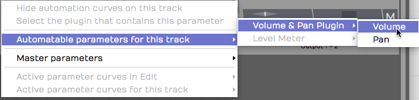
Select the Parameter to Automate
You'll see an automation line appear. The line is labelled with the name of the parameter, and the value of the parameter is listed over on the right. This line is the "automation curve." There's no literal curve to it yet, because it's just a line. As you will see shortly, it's easy to draw curves, steps, and ramps.
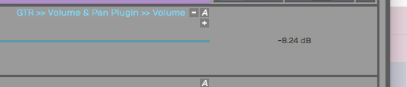
The Automation Curve Line
Click the curve to select it, then check out its properties. You can change the Name or choose from several actions. Those make more sense once you have some automation points on the curve.

Automation Curve properties
💡 Tip: A fast way to set the automation parameter for the track is to grab the A icon and just drop it on the thing you would like to automate. Then choose the parameter from the list. So, to automate panning, drag the A and drop it on the Volume & Pan plugin and then choose Pan from the list. This also works for third party plugins.
Adding Points to the Automation Curve¶
To give your Automation Curve some shape, you need to add some points on it. Add points with either double-click or Opt-click / Alt-click. Here is how to work with the automation points:
Creating a Ramp - To draw a ramp add two points and the drag one of them up or down. This adjust the steepness of the ramp. Drag the points left or right to adjust the start and ending of the ramp.
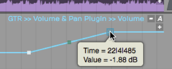
Drawing an Automation Ramp
Shaping with Curvature - To shape the line segment between points you can use the Curvature the point. A Curvature point is automatically inserted midway between two automation points. Adjust Curvature by dragging diagonally.
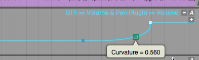
Adjusting a Curvature Point
💡 Tip: The automation point can also be adjusted in properties using the Value parameter slider. You will also find a slider for Curvature in properties.
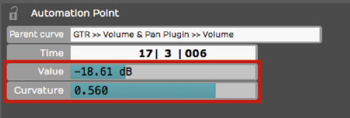
Value and Curvature properties
Drawing an Automation Step - Insert two points that define the position of the step. Hold down Cmd / Ctrl and drag the line segment between the points up or down. You'll see that the line segment moves separately from the overall automation curve. This makes it really easy to draw in a step shape on your automation. If you don't hold down Cmd / Ctrl, then the entire automation curve moves.
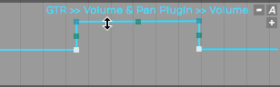
Hold Cmd / Ctrl to Draw a Step
Editing Automation¶
If you select a range in a track showing automation, the automation edit handles will appear. You can drag the centre handles to shift or scale all the existing points, of the handles in the corners to shift or scale the points anchored from one of the ends. This allows you to quickly adjust many points or add musical effects like ramps.

With a range selected you can also right click and choose the "Insert automation shape" option to create a shape withing the range. Once the shape is chosen, you can choose the number of repotitions, either a specific number to fit inside the range or the shape repeating at a musical period.

You can combine shape inserting with the scale/offset handles to quickly create interesting and rhythmical patterns.

Automating Fade-ins and Fade-outs¶
To program a fade shape with automation, add a point where you'd like the fade to start, then add another point where you'd like the fade to end. Drag the second point all the way down until the value reads zero. Adjust the speed of the fade by dragging point down to the left for a quicker fade or up to the right for a more gradual fade. Dragging the Curvature point to adjust the shape of the fade ramp. Of course, you always have the option to adjust that parameters directly in properties.
As we discussed in a earlier, if you program an automation curve for a track folder, you can apply a fade across all the tracks together.
Converting a Clip Fade-in or Fade-out to Automation¶
As you've already learned you can easily apply fade-ins or fade-outs to Audio Clips with the fade handles on the upper left and right corners of the clip. If, for some reason, you'd like more control over the fade shape you can convert a clip level fade to and an automation curve.
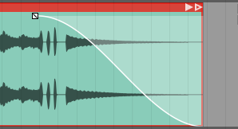
Clip Fade
To convert a clip fade to automation, first select the clip and then click Copy Fade To Automation > Transfer Fade-in to Automation, Transfer Fade-out to Automation in properties.
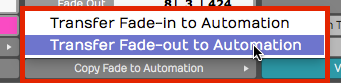
Copy Fade to Automation
That will redraw the automation curve in the shape of the fade and remove the clip fade from the clip. Now you can apply additional points and shaping using the automation tools.
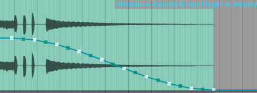
Result of Copy Fade to Automation
Reading Automation¶
Once you've drawn automation like this, Waveform performs the automation dynamically during playback, as long as you have Automation Read enabled on the Transport.

Automation Read Enabled
As you playback, watch the controls changing in real time as the cursor moves through the Edit. If you go back about three decades that feature would cost you about a million bucks!
Automation Curve properties¶
The automation curve has several of its own properties. Click on the curve to selected it and look at properties. Here is a rundown of the controls:
Automation Curve properties
Curve - The Curve property is the name that appears above the automation curve. This is here for reference only. You can't change it directly. It is made up of the track name, the plugin name, and the parameter.
Curve Enabled - Allows you to disable the curve. A disabled curve has no effect on the parameter and can be used to quickly test what affect the automation is having. A disabled curve will show greyed out in the track. If you write automation it touch or latch modes, this will re-enabled the curve.

Displace Curve - Displace Curve allows you to drag left or right which offsets the curve up or down. It basically takes the entire programmed curve and set of points, and moves them down if you drag left or up if you drag right. This is very useful to make minor mix changes after the automation is already programmed.
Scale Curve - Think of Scale Curve to function like an intensity control. As you drag to the left, it proportionately lowers all of the points on the curve, squashing the shape of the curve. Dragging to the right expands the curve, scaling it upward.
Only Displace/Scale the Marked Region - This parameter works along with Displace Curve and Scale Curve. When enabled, any scaling or displacing, only occurs between the In-marker and the Out-marker.
Simplify - If your automation curve becomes very complex with lots and lots of points, you use Simplify to thin out the points. You can usually choose Simplify the entire curve and then pick from Light, Medium, and Strong. The Light option does the least thinning where Strong thins the most. This is particularly useful if you recorded automation from a hardware controller that added hundreds of points.
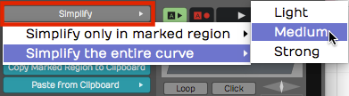
Automation Curve Simplify
You also have the option to Simplify only in marked region. You can use this if you want to simply just simplify a section that was recorded from hardware, leaving the rest of the curve unchanged.
Delete Points from Curve - This set of options allows you to completely reset the automation curve. If you delete all points from the curve, you've basically taken it back to a flat line. Sometimes this results in the automation value being set very low, so you might need to drag the curve line back to a good starting position.
You can also Delete points within the marked region which means you'll delete all the points between the In-marker and the Out-marker. You can do the same thing and "close the gap," means to take out the time within the marked region.
Copy the Marked Region to the Clipboard - Set the In-marker and the Out-marker over a region of automation and click Copy Marked Region to the Clipboard to copy that region of the curve. Then, position the cursor to the destination and select Paste From Clipboard > Paste Curves at Cursor Position and that pastes the automation. This makes it fast to create repeating patterns of automation.
This is also useful if you've created a very specific effect using automation and want to reproduce that effect in a later part of the song.
Paste from Clipboard has two options. - Most of the time I would use Paste curves at cursor position. You can alternatively do that with Cmd + V / Ctrl + V.
Alternatively, choose Paste curves to fit between the in/out markers. That allows targeting the destination only within the merged region. Normally you paste at the cursor position.
💡 Tip: You don't need to manually copy automation when moving or duplicating clips on a track. Enable Auto Lock in the transport bar and the automation follows along as you move or duplicate clips.
How to Find Out What Automation is Active for a Track¶
It's pretty easy to program a lot of automation, but sometimes you don't have all of the automation curves visible. To see which ones are available click the A icon and select Active Parameter Curves for This Track. This shows all automation curves for the track and you can choose which one to make visible.
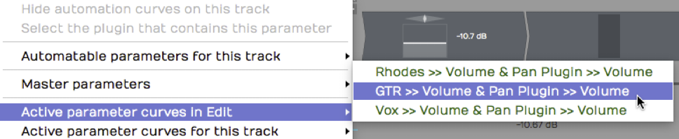
Active Parameters for a Track
This is particularly helpful if you don't have each parameter on a separate Automation track.
Remap on Tempo Change¶
Each plugin has a Remap on Tempo Change setting in properties. With that enabled, as you change the tempo of the song, the automation will track the tempo changes. That means it will get smaller if you speed up the tempo or it will get longer in order to match the clips in your Edit. This is a great feature but is not enabled by default; You need to turn it on for each plugin.
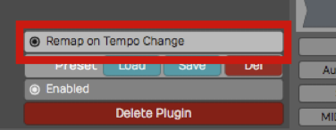
Remap on Tempo Change
💡 Tip: We suggest you turn Remap on Tempo Change on as a global option for all new Edits. To do so, enable Timecode > Default remapping options > Remap plugin automation from the Menu section.
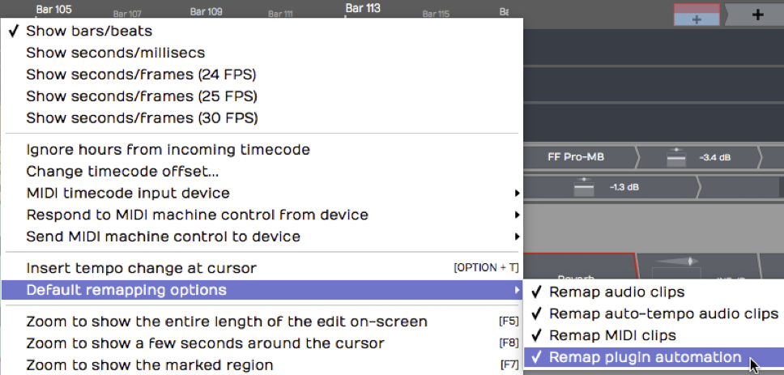
Make Remap the Default
📝 Note: Remap Plugin Automation is not set as the default or turned on by default, to maintain compatibility with older projects. This setting and the new default option were new for T6.
Writing Automation on the Fly¶
During playback, you can adjust a parameter in real time and have Waveform record it as automation. You can do this with a MIDI controller, or simply by manipulating plugin controls on-screen during playback. All you need to do is setup your automation track and enable Automation Write mode.

Automation Write Enabled
To go into write mode, enable the Automation Write button on the Transport. Now, during playback, Waveform will record any dynamic changes you make to the parameter.
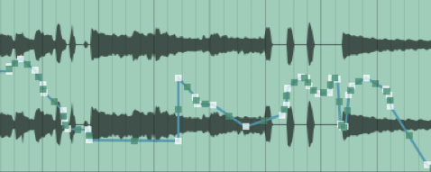
Automation from Write Mode
📝 Note: You don't need to be in Record mode to record automation changes. All you need is to have automation write turned on during playback.
💡 Tip: When you've written automation this way, it's often a good idea to use Simplify to thin out the automation points. You may find you get good results with the Medium option.
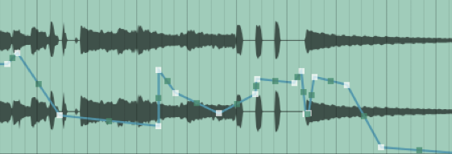
Automation with Medium Simplification
Automation Modes¶
Each track has several different automation modes it can be in. These can be set from the A button and the "Automation Mode" menu. The A button on the track will change colour based on the current mode.

- Read:

In read mode automation is only read. The global automation read mode must also be enabled. If this is not, the A button will be greyed out to indicate automation won't be read.
- Touch:

In touch mode, automation is written whilst the parameter is actively being used. This usually means whilst the mouse is down on a control or an external controller is being touched.
- Latch:

In latch mode, automation is written from the time a parameter is first changed. If the mouse is then lifted, whatever the last value written was will overwrite any points on the curve until playback is stopped.
- Write:

In write mode, automation is continously written. This can be dangerous as as soon as you start play back, whatever value the parameters have will overwrite the existing automation. You should prefer touch or latch modes.
📝 Note: For modes that enable writing (touch/latch/write), global automation write must also be enabled. If it is not, the A buttons will be greyed out to indicate automation won't be written.
💡 Tip: When a track has a parameter that is being written, the track's A button and the global automation write button will flash to indicate this.
Automation Lock¶
Notice in the transport bar, there is an Auto Lock button. By default that button is not engaged. If you move a clip around on a track, the automation will not follow it to the new position.
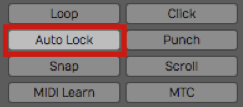
Automation Lock Engaged
With Auto Lock engaged, automation will follow as you drag the clip to a different place in time. It's a great feature, assuming that's what you want to do.
Clip Automation¶
You can also add automation curves to specific clips. These can control parameters from clip, track or master plugins within the clip's scope (i.e. not a parameter from a plugin on a different track to the clip).
These curves are slightly different to track automation curves in that they are always played back relative to the clip (i.e. they move with the clip) and there are actually three separate curves to control the parameter: absoulte, relative and scale.
Using a combination of these curves and different timing settings you can quickly create complex and rhythmic patterns. We'll go through the settings next.
The Clip Automation Editor¶
The clip automation editor can be found from the MIDI/clip editor. You can make this visible from the "eye" button or by double clicking the clip. If you don't see the clip automation properties above the "background audio clip" property, increase the height of the panel.

With the clip selected, you should see its contents in relation to the Edit's timeline. (Clip launcher clips are always relative to time 0). Ensure the "eye" button here is enabled to show the automation editor. The clip's content will dim. Next, select the plugin and parameter you want to automate from the box next to the "eye" button. If there is no automation on the curve already, you'll see a dashed line indicating the parameter's current value.

If the "Absolute" curve is selected and the "Unlinked" button disabled, the value of the parameter can be set by adding points to the curve. If the clip is looped, you'll see the looped region under the time bar along with the start/end points of the clip on the timeline. if you make a simple curve like a ramp you'll see the automation line ramp down and stay low but in the looped region, the shaded area shows the value of the automation once the clip loops.

The playhead here shows the position of the automation being read rather than the overall timeline which can be useful when determining what automation points coresspond to what time.
To remove all automation curves from this clip for the parameter being shown, click the trash can button to the right of the parameter selector button.
Linked/Unlinked Mode¶
In "linked" mode ("Unlinked" button disabled), the start/length and loop start/length properties of the curve are tied to the clip. You can see these indicated under the time bar but can't edit them. The properties to the right of the curve editor are also greyed out.
In "Unlinked" mode, these properties are separate from the clip. Enabling "Unlinked" mode allows you to edit the start/length with the timecode properties or by dragging the start/end flags below the timeline.
The "Loop" setting is also separate from the clip's loop setting and can be turned on/off. If enabled the loop start/end properties are editable and the loop in/out flags can be dragged in the timeline. There is no "end" flag in looped mode as automation will continue until the clip ends.
The "Unlinked" mode and corresponding properties are separate for each automation curve type.
Curve Types (Absolute/Relative/Scale)¶
As mentioned, there are three types of curve that can be programmed. - Absolute: Controls the base value of the parameter, overriding any track automation that might be present - Relative: Modifies the base value of the parameter by shifting it up or down 50% - Scale: Modifies the base value of the parameter by scaling 0-100%
Having these three curves, each with different timing information means you can create complex patterns using very few points.
E.g.
- A single absolute point creating a straight curve
 - A short relative loop creating a repeating ramp
- A short relative loop creating a repeating ramp
 - A longer scale ramp controlling the peak of each relative loop
- A longer scale ramp controlling the peak of each relative loop

The result is the 1 beat repeating ramp you can see in the filled section of the editor.
Curve Editing¶
Clip automation curves can be edited in the same way as track automation curves. Selecting a range shows the curve edit handles in the corners which can be dragged to shift or skew the points in the range.

Right clicking the curve shows the popup menu where points can be deleted, copied or pasted. The options available will depend on if a range is selected or not.
Finally, you can use the "Insert automation shape" option to create pre-defined shapes such as sin/saw/square repeating a number of iterations or at a musical interval.

Automation Patterns¶
Waveform lets you quickly create repeated automation patterns between the In-marker and the Out-marker.
- To get started, create an automation curve for a parameter you would like to modulate. In this example we are using a simple volume curve.
- Then, set the In-marker and Out-marker over the range to which you want to apply the pattern.
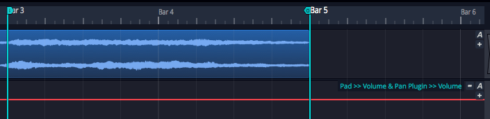
Volume Automation Between In-marker and Out-marker
- Select the automation curve, then in the Actions panel click Create Pattern Between the Marked Region.
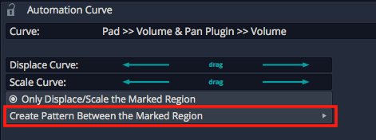
Create Pattern Between the Marked Region
- Next, choose from the various pattern shape options. For this example we chose Triangle.
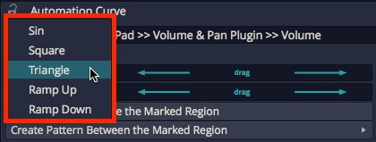
Select the Pattern Shape
- Choose a note division for the pattern or number of repeats. In typical Waveform fashion, we chose 1/2 beat in order to repeat the pattern every 1/8th note.
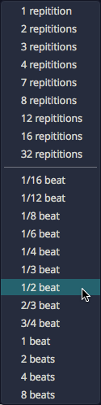
Select Beat Division or Repetitions
Here is the resulting automation.
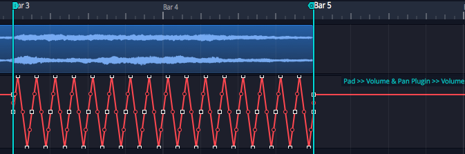
Repeating Triangle Automation
- Adjust the curve using the Displace Curve and Scale Curve drag controls or by editing the automation points in the usual way.
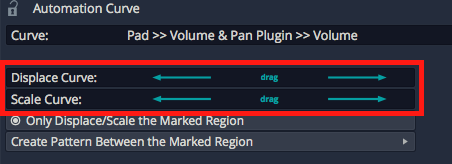
Displace and Scale Curve Controls
Here are examples of the other automation pattern shapes:
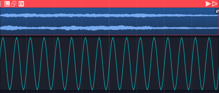
Sine Wave
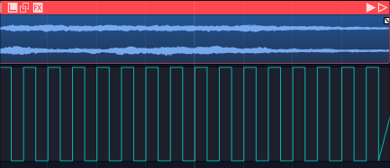
Square Wave
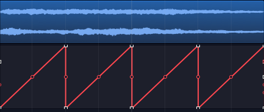
Ramp Up
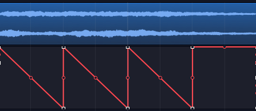
Ramp Down
Automation Ramps¶
As a companion to automation patterns, Waveform allows you to ramp patterns up or down in a very simple and effective way. This works in conjunction with patterns to allow you to increase or decrease the intensity of a pattern over time. The two Ramp options work as modifiers to the existing Displace and Scale tools.
Automation Ramps are best explained with an example:
- Set the In-marker and Out-marker over a segment of automation you would like to ramp in.
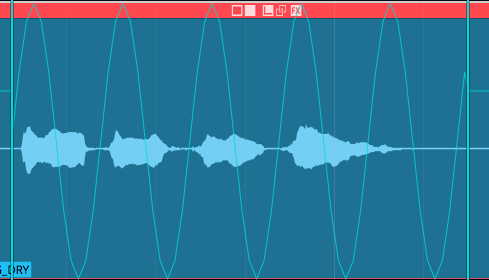
Selected Region of an Automation Pattern
- Click on the automation curve to select it.
- In the Actions panel, click Ramp from the start of Marked Region to enable the ramp behavior.
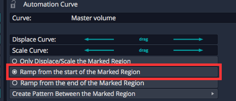
Enable Ramp from the start of Marked Region**
- In the Actions panel, manipulate the Displace Curve and Scale Curve sliders. Notice how these affect the left side of the curve allowing you to fade in the automation pattern.
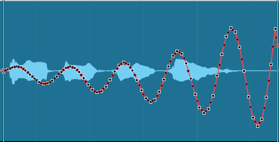
Taper the Curve using Displace Curve and Scale Curve Sliders
The companion Ramp from the end of the Marked Region allows you to taper automation down.
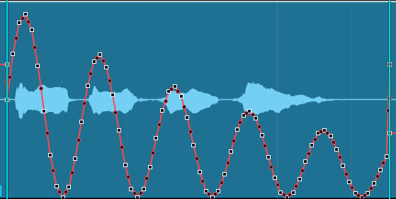
Ramp from the end of the Marked Region
These features are easy to miss at first glance, but they provide tremendous creative potential when programming automation.
💡 Tip: The automation ramp features are also available when working the Volume & Pan Clip Layer effect which is explained in Clip Layer Effects.
Video Clip: Here is a video clip that demonstrates the automation ramp modifiers.
Moving On¶
There is a lot more you can do with automation, because you can automate almost any parameter. You can automate sends to effects. You can even automate your Master plugins. Simply create a separate track then drag the A icon from that track over to the master track's plugins to automate them.